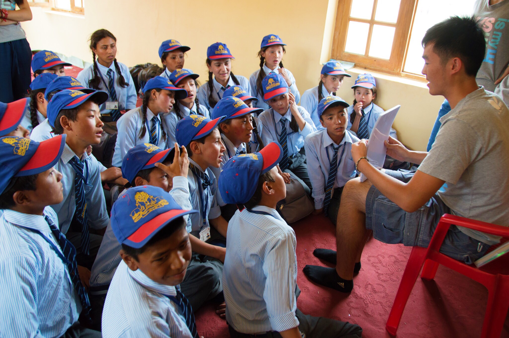
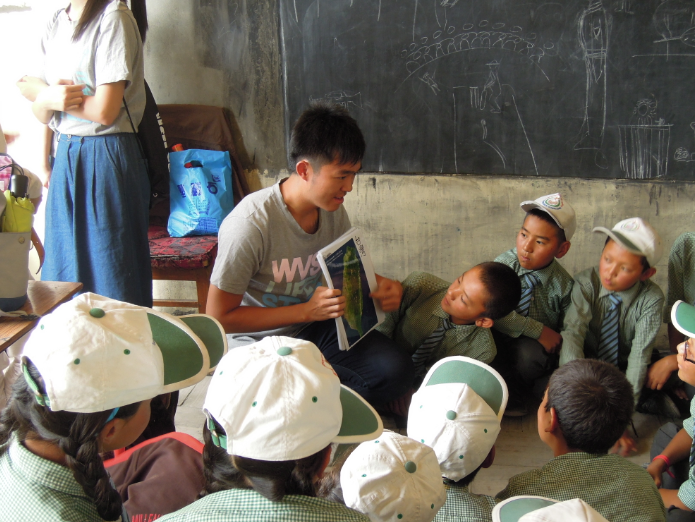
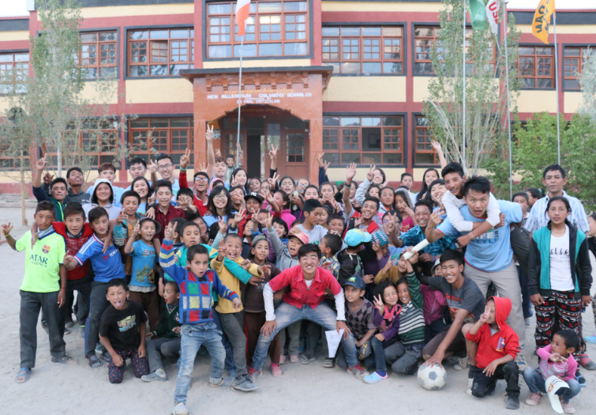

Hello , I am Jacky Hsu
Just try it !
ABOUT
education
-
 Nation Taiwan University School of Forestry and Resources Conservation
Nation Taiwan University School of Forestry and Resources Conservation
Jacky Hsu
- Hi!
- 我是臺大森林大四的學生 許家齊
- 喜歡嘗試各種我覺得有趣的事，是個不務正業的人
- 目前努力將自己的觸手伸向網頁和商業，目標是擁有一間自己的新創公司
- 因為我覺得不論是藍海還是紅海
- 唯有出海，才能真正掌握自己的命運，才是真正的自由!
NTUWVS

Jacky Hsu

Jacky Hsu

Jacky Hsu
我的wvs大事記
- 2015臺大世界志工社寒假花蓮奇美服務隊-隊員
- 擔任隊輔及負責營隊故事與營歌設計
- 2015臺大世界志工社印度拉達克服務隊-隊員
- 負責文化教案向印度國中、小學童介紹臺灣與臺灣文化
- 2016臺大世界志工社活動部-部員
- 負責各類活動籌辦與老人院服務
- 2016臺大世界志工社寒假花蓮奇美服務隊-隊輔長
- 負責調派人力及教案與活動驗收
- 2016臺大世界志工社印度拉達克服務隊-領隊
- 出隊前負責各項事前規劃、聯絡與申請；出隊期間負責與當地合作夥伴溝通及協調並做出決策；出隊後之檢討與成果報告統整
Activity
樂於參加各種活動
- 2015 新生盃壘球賽、運動會游泳接力
- 2015 臺大森林之夜-大一舞、大一劇、跨屆Band主唱
- 2015 臺大森林營-隊輔
- 2016 臺大森林系羽球隊-副隊長
- 2016 臺大森林之夜-大二舞、大二劇、公關部長
- 2017 臺大森林之夜-跨屆舞
其他興趣
- 唱歌
- 就算會有一天，沒人與我合唱，至少在我的心中，還有個尚未崩壞的地方
- 旅遊
- 就算只是市區的行腳也可以是一趟精彩的旅程
- 詩
- 醉過才知酒濃，愛過才知情重。妳不能作我的詩，正如我不能做你的夢。
︽